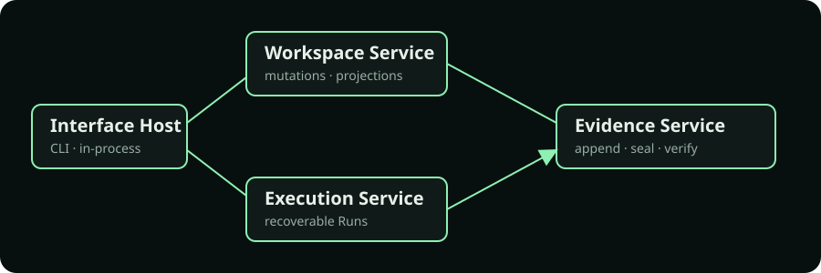

State you can’t explain
When a run says “done,” operators need the chain of events—not a best guess from a dashboard.
OperatorOS Platform v1.0 release candidate
Run consequential automation with human authority, durable Mission Records, and recovery you can verify. No required network authority in the Local profile.
13 packages · 4 replaceable components · repository-backed architecture
event_id: …sequence: …mission_record_ref: …WHY OPERATOROS
When a run says “done,” operators need the chain of events—not a best guess from a dashboard.
Policies, grants, identities, and secrets should be explicit, local, and owned by the people responsible.
Long-lived work needs checkpoints, idempotency, and recovery designed in before production.
BUILT FOR OPERATORS
Canonical local authority, isolated workspaces, and no telemetry requirement.
Atomic event records and verifiable Mission Records make every outcome inspectable.
Human-authored policy, capability-scoped extensions, and explicit grants.
Durable acknowledgements, checkpoints, reconstruction, and safe retries.
ARCHITECTURE
Workspace OS semantics remain upstream. OperatorOS implements replaceable mechanisms around them, so surfaces and stores can evolve without changing authority.

FIRST MISSION
AI-native workflow means agents can propose and execute within explicit grants—but the operator remains the final authority. Start local, inspect the evidence, then extend.
$ pnpm install --frozen-lockfile
$ pnpm --filter @operatoros-platform/cli build
$ node apps/cli/dist/index.js --workspace /tmp/operatoros-demo init
$ node apps/cli/dist/index.js --workspace /tmp/operatoros-demo explain --json
$ pnpm test apps/smokeThe CLI commands initialize local state and list supported operations. The smoke test executes the repository-backed Mission integration flow.
Source: repository v1.0 candidate evidence. These test-host observations are not capacity or latency guarantees.
THE PLATFORM
ROADMAP
FAQ
A Mission is named declarative intent. A Run is one execution of that intent. A Mission Record is the durable evidence record for a Run and can be sealed after terminal evidence is verified.
No. The Local profile has no required network authority or telemetry path.
The operator. Policies and capability grants are human-authored; AI cannot alter them.
Events append atomically, then Mission Records are sealed and integrity-verified.
Acknowledged mutations have durability evidence, checkpoints, and reconstruction paths.
Yes. OperatorOS integrates with Workspace OS semantics without rewriting their authority.
The repository contains an in-memory multi-tenant contract shape, not a deployed or production-ready hosted service.
Planned hardening includes an OS keyring adapter, OpenTelemetry, a stable SQLite binding, and tracked technical-debt work.
READY WHEN YOU ARE
Read the architecture, run locally, and build from evidence.
corepack enable
pnpm install --frozen-lockfile
pnpm build
pnpm test apps/smoke